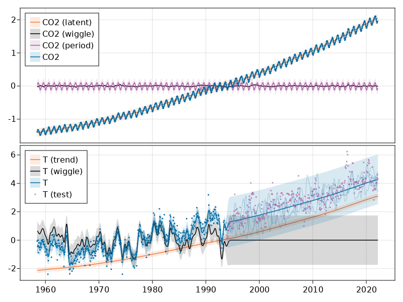

CO2 and temperature

You are seeing the HTML output generated by Documenter.jl and Literate.jl from the Julia source file. The corresponding notebook can be viewed in nbviewer.
using AbstractGPs
using AbstractGPsMakie
using CairoMakie
using CSV
using DataDeps
using DataFrames
using Dates
using Distributions
using KernelFunctions
using LinearAlgebra
using Optim
using ParameterHandling
using Random
using Statistics
using Stheno
using Zygote
using CairoMakie: RGB
ENV["DATADEPS_ALWAYS_ACCEPT"] = "true""true"Obtain the data
Use DataDeps.jl to obtain the data.
register(DataDep(
"mauna_loa",
"The classic Mauna Loa CO2 data.",
"https://scrippsco2.ucsd.edu/assets/data/atmospheric/stations/in_situ_co2/monthly/" *
"monthly_in_situ_co2_mlo.csv",
))
register(DataDep(
"hadcrut5_global",
"Globally-averaged surface temperatures",
"https://www.metoffice.gov.uk/hadobs/hadcrut5/data/current/analysis/diagnostics/" *
"HadCRUT.5.0.1.0.analysis.summary_series.global.monthly.csv",
))DataDeps.DataDep{Nothing, String, typeof(DataDeps.fetch_default), typeof(identity)}("hadcrut5_global", "https://www.metoffice.gov.uk/hadobs/hadcrut5/data/current/analysis/diagnostics/HadCRUT.5.0.1.0.analysis.summary_series.global.monthly.csv", nothing, DataDeps.fetch_default, identity, "Globally-averaged surface temperatures")Load and pre-process the data.
ml_df, Ttr_df, Tte_df = let
mauna_loa_co2 = let
mauna_loa_data_raw = CSV.read(
joinpath(datadep"mauna_loa", "monthly_in_situ_co2_mlo.csv"), DataFrame;
skipto=58, header=false,
)
data = DataFrame(
date=map(Date, mauna_loa_data_raw.Column1, mauna_loa_data_raw.Column2),
CO2=map(x -> x == -99.99 ? missing : x, mauna_loa_data_raw.Column5),
)
data = filter(:CO2 => !ismissing, data)
# standardise CO2 data to have unit mean.
m = mean(data.CO2)
σ = std(data.CO2)
data.CO2 = Float64.(data.CO2 .- m) ./ σ
# Convert dates into floats.
data.float_date = map(x -> x.value, data.date .- Date(1)) ./ 365
data
end
temperature = let
hadcrut5_data_raw = CSV.read(
joinpath(
datadep"hadcrut5_global",
"HadCRUT.5.0.1.0.analysis.summary_series.global.monthly.csv",
),
DataFrame;
header=1,
)
tmp = DataFrame(
date=hadcrut5_data_raw[!, "Time"],
temperature=hadcrut5_data_raw[!, "Anomaly (deg C)"],
)
# Convert dates into floats.
tmp.float_date = map(x -> x.value, tmp.date .- Date(1)) ./ 365
# Remove any data from before the first Mauna Loa data.
time_min = minimum(mauna_loa_co2.date)
filter(:date => date -> date >= time_min, tmp)
end
# Split temperature data into train and test.
Ntr = 425
Ttr_raw = temperature[1:Ntr, :]
Tte_raw = temperature[(Ntr + 1):end, :]
# Standard temperature data using training data.
mtr = mean(Ttr_raw.temperature)
σtr = std(Ttr_raw.temperature)
Ttr = DataFrame(
date=Ttr_raw.date,
float_date=Ttr_raw.float_date,
temperature=(Ttr_raw.temperature .- mtr) ./ σtr,
)
Tte = DataFrame(
date=Tte_raw.date,
float_date=Tte_raw.float_date,
temperature=(Tte_raw.temperature .- mtr) ./ σtr,
)
mauna_loa_co2, Ttr, Tte
end;┌ Warning: Checksum not provided, add to the Datadep Registration the following hash line
│ hash = "bbeb66a24684e96ddd86bc5942dd2e444785fb0908fa9f2a5b50126ff2151575"
└ @ DataDeps ~/.julia/packages/DataDeps/ooWXe/src/verification.jl:44
┌ Warning: Checksum not provided, add to the Datadep Registration the following hash line
│ hash = "c3590af7d9067f1097b7254fcc0735ba068c5efeb43f36a0982b983b75961aab"
└ @ DataDeps ~/.julia/packages/DataDeps/ooWXe/src/verification.jl:44
Build and train a model for the data
Model for CO2 and temperature as a function of time.
function build_gp(θ)
return @gppp let
# Shared trend process.
f_trend = stretch(GP(SEKernel()), θ.λ_trend)
# Specify model for CO2.
f_co2_latent = θ.CO2.σ_latent * f_trend
f_co2_wiggle = θ.CO2.σ_wiggle * stretch(GP(SEKernel()), θ.CO2.λ_wiggle)
f_co2_period = θ.CO2.σ_period * GP(SEKernel() ∘ PeriodicTransform(θ.CO2.freq))
f_co2 = f_co2_latent + f_co2_wiggle + f_co2_period + θ.CO2.σm * GP(ConstantKernel())
# Specify model for temperature.
f_T_trend = θ.T.σ_trend * f_trend
f_T_wiggle = θ.T.σ_wiggle * stretch(GP(SEKernel()), θ.T.λ_wiggle)
f_T = f_T_trend + f_T_wiggle + θ.T.σm * GP(ConstantKernel())
end
end
x_co2 = ml_df.float_date;
x_T_tr = Ttr_df.float_date;
x_T_te = Tte_df.float_date;
y_co2 = ml_df.CO2;
y_T_tr = Ttr_df.temperature;
y_T_te = Tte_df.temperature;
x = BlockData(GPPPInput(:f_co2, x_co2), GPPPInput(:f_T, x_T_tr))
y = vcat(y_co2, y_T_tr)
function build_obs_cov(θ)
σ²_CO2 = θ.CO2.σ_noise^2
σ²_T = θ.T.σ_noise^2
return Diagonal(vcat(fill(σ²_CO2, length(y_co2)), fill(σ²_T, length(y_T_tr))))
end
function nlml(θ)
f = build_gp(θ)
return -logpdf(f(x, build_obs_cov(θ)), y)
end
init_params = (
λ_trend = positive(1e-1),
CO2 = (
σ_latent = positive(0.3),
σ_wiggle = positive(0.3),
λ_wiggle = positive(5.0),
σ_period = positive(0.3),
freq = fixed(1.0),
σ_noise = positive(0.1),
σm = positive(1.0),
),
T = (
σ_trend = positive(1.0),
σ_wiggle = positive(1.0),
λ_wiggle = positive(0.5),
σ_noise = positive(0.1),
σm = positive(1.0),
),
)
default_optimizer = LBFGS(;
alphaguess=Optim.LineSearches.InitialStatic(; scaled=true),
linesearch=Optim.LineSearches.BackTracking(),
)
function optimize_loss(loss, θ_init; optimizer=default_optimizer, maxiter=1_000)
options = Optim.Options(; iterations=maxiter, show_trace=true)
θ_flat_init, unflatten = ParameterHandling.value_flatten(θ_init)
loss_packed = loss ∘ unflatten
# https://julianlsolvers.github.io/Optim.jl/stable/#user/tipsandtricks/#avoid-repeating-computations
function fg!(F, G, x)
if F !== nothing && G !== nothing
val, grad = Zygote.withgradient(loss_packed, x)
G .= only(grad)
return val
elseif G !== nothing
grad = Zygote.gradient(loss_packed, x)
G .= only(grad)
return nothing
elseif F !== nothing
return loss_packed(x)
end
end
result = optimize(Optim.only_fg!(fg!), θ_flat_init, optimizer, options; inplace=false)
return unflatten(result.minimizer), result
end
θ_opt, result = optimize_loss(nlml, init_params)((λ_trend = 0.08117925596820141, CO2 = (σ_latent = 1.0929694377096424, σ_wiggle = 0.013705932051262778, λ_wiggle = 5.326764962974475, σ_period = 0.06066085696206938, freq = 1.0, σ_noise = 0.007310148041717022, σm = 0.005211200364913826), T = (σ_trend = 1.6624938593141776, σ_wiggle = 0.5791619163697767, λ_wiggle = 3.6335576216944028, σ_noise = 0.40366881695460455, σm = 1.1786155793352608)), * Status: success
* Candidate solution
Final objective value: -1.952912e+03
* Found with
Algorithm: L-BFGS
* Convergence measures
|x - x'| = 0.00e+00 ≤ 0.0e+00
|x - x'|/|x'| = 0.00e+00 ≤ 0.0e+00
|f(x) - f(x')| = 0.00e+00 ≤ 0.0e+00
|f(x) - f(x')|/|f(x')| = 0.00e+00 ≤ 0.0e+00
|g(x)| = 4.50e-02 ≰ 1.0e-08
* Work counters
Seconds run: 284 (vs limit Inf)
Iterations: 78
f(x) calls: 101
∇f(x) calls: 78
)Plot the resulting model fit.
function colours()
return Dict(
:blue => RGB(0/255, 107/255, 164/255),
:cyan => RGB(75/255, 166/255, 251/255),
:red => RGB(200/255, 82 / 255, 0 / 255),
:pink => RGB(169/255, 90/255, 161/255),
:black => RGB(0.0, 0.0, 0.0),
:orange => RGB(245/255, 121/255, 58/255),
)
end
band_alpha() = 0.3
sample_alpha() = 0.2
point_alpha() = 1.0
x_plot = range(
minimum(vcat(ml_df.float_date, Ttr_df.float_date)),
maximum(vcat(ml_df.float_date, Tte_df.float_date));
length=1_500,
);
f_post = posterior(build_gp(θ_opt)(x, build_obs_cov(θ_opt)), y);
function plot_band!(ax, x_plot, fx, colour, label)
ms = marginals(fx)
symband!(
ax, x_plot, mean.(ms), std.(ms);
bandscale=3,
color=(colours()[colour], 0.5 * band_alpha()),
label=label,
)
end
function plot_sample!(ax, x_plot, fx, colour)
gpsample!(
ax, x_plot, fx;
samples=4, color=(colours()[colour], sample_alpha()),
)
end
function plot_gp!(ax, x_plot, fx, colour, label)
plot_band!(ax, x_plot, fx, colour, label)
plot_sample!(ax, x_plot, fx, colour)
end
let
fig = Figure()
ga = fig[1, 1] = GridLayout()
jitter = 1e-6
# Plot CO2 posterior.
let
ax = Axis(ga[1, 1])
f_post_x = f_post(GPPPInput(:f_co2, x_plot), jitter)
plot_band!(ax, x_plot, f_post(GPPPInput(:f_co2_latent, x_plot), jitter), :orange, "CO2 (latent)")
plot_band!(ax, x_plot, f_post(GPPPInput(:f_co2_wiggle, x_plot), jitter), :black, "CO2 (wiggle)")
plot_band!(ax, x_plot, f_post(GPPPInput(:f_co2_period, x_plot), jitter), :pink, "CO2 (period)")
plot_gp!(ax, x_plot, f_post_x, :blue, "CO2")
scatter!(ax, x_co2, y_co2; color=(colours()[:blue], point_alpha()), markersize=3)
axislegend(ax; position=:lt)
hidexdecorations!(ax; grid=false)
end
# Plot temperature posterior.
let
ax = Axis(ga[2, 1])
f_post_x = f_post(GPPPInput(:f_T, x_plot), jitter)
plot_band!(ax, x_plot, f_post(GPPPInput(:f_T_trend, x_plot), jitter), :orange, "T (trend)")
plot_band!(ax, x_plot, f_post(GPPPInput(:f_T_wiggle, x_plot), jitter), :black, "T (wiggle)")
plot_gp!(ax, x_plot, f_post_x, :blue, "T")
scatter!(ax, x_T_tr, y_T_tr; color=(colours()[:blue], point_alpha()), markersize=3)
scatter!(
ax, x_T_te, y_T_te;
color=(colours()[:pink], point_alpha()),
markersize=5,
marker=:xcross,
label="T (test)"
)
axislegend(ax; position=:lt)
end
rowgap!(ga, 5)
fig
end
This page was generated using Literate.jl.